Produto
Shopee é uma empresa multinacional de tecnologia de Singapura que se concentra principalmente no e-commerce sendo líder no Sudeste Asiático e Taiwan. Possui uma variedade grande de produtos, eletrônicos, produtos de beleza, brinquedos e tantos outros. Chegou ao Brasil em 2019 e vem ganhando cada vez mais espaço no mercado nacional.
Pesquisa inicial
Analisei os principais concorrentes no ramo, os aplicativos da Amazon e Mercado Livre. Foi importante para entender o que era bem estabelecido, os padrões que elas seguem e funcionalidades.
Alguns pontos que são importantes de serem destacados:
- Interface minimalista
- Facilidade de visualizar informações
- Funções menos utilizadas ficam ocultas em menus
- Boa organização
- Simplificação da navegação
- Maior destaque para os produtos
Análise de Usabilidade
Utilizando as heurísticas de Nielsen para fazer a análise de usabilidade, considerei as três mais evidentes na interface.
Consistência e Padronização
Alguns elementos visuais como os cards de produtos, ícones e categorias não seguem um padrão. Outro ponto importante de ressaltar é na barra de pesquisa, onde o texto não corresponde com a função da barra de busca.
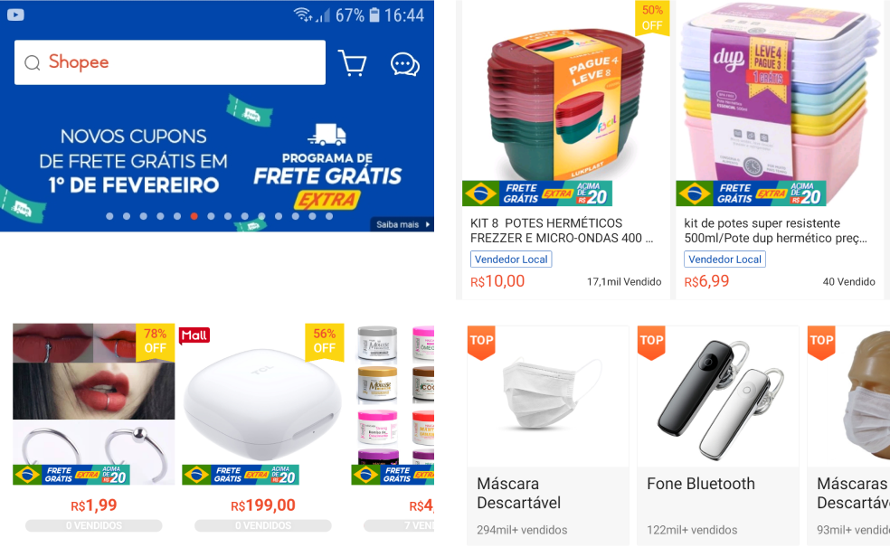 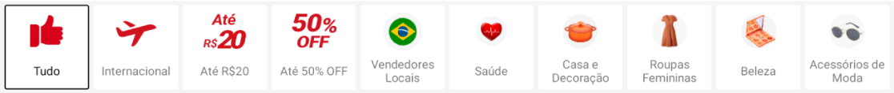Eficiência e flexibilidade de uso
O aplicativo apresenta muitas opções para o usuário fazendo com que ele tenha que buscar a opção que deseja no meio de várias opções.
Outro ponto é que funções importantes como “Compras”, que permite ao usuário um acesso rápido às compras feitas e podendo acompanhar o andamento delas, ficam escondidas. Isso faz com que o usuário precise cumprir mais etapas para acessar algo de importância no uso da plataforma. (Tela da esquerda na imagem abaixo)
Estética e design minimalista
Um dos principais pontos de melhoria na interface. A quantidade de informações apresentadas para o usuário logo na página inicial faz com que ele fique confuso e perdido logo no primeiro contato com o app. Pouco espaçamento, pouco respiro visual e muitas opções de atalhos e menus. Com tantas opções o que era necessário ser destacado acaba perdendo seu valor. (Tela da direita na imagem abaixo)
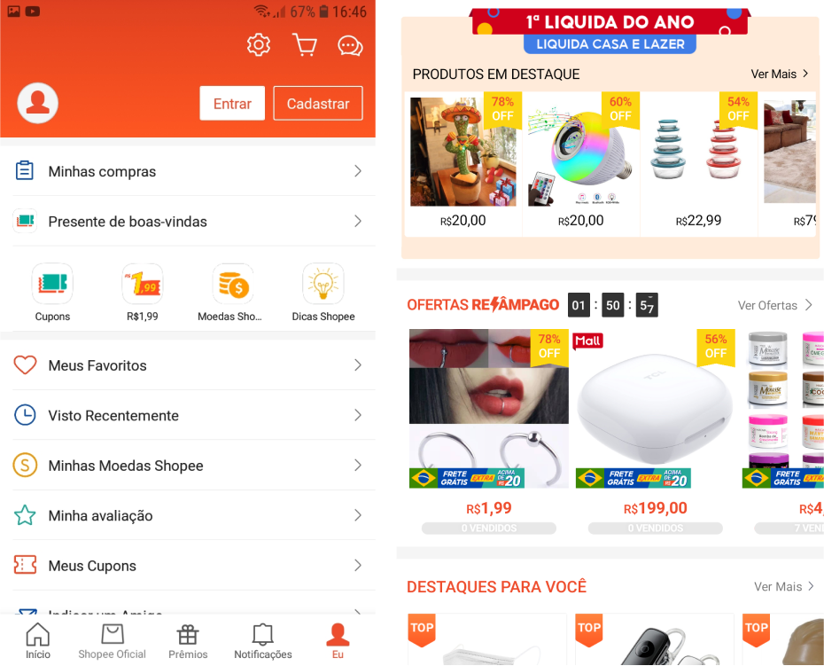Objetivos
As diretrizes básicas que nortearam o redesign da interface da home foram:
Manter a Identidade Visual
Tudo que está relacionado a identidade visual da marca foi preservado.
Acessibilidade
Melhorando os pontos de interação, aumentando as áreas clicáveis, adequando fontes e também o contraste.
Arquitetura da informação
Estruturando melhor como a informação é apresentada para o usuário.
Mexer pouco na estrutura de navegação
Evitar mudanças disruptivas fazendo com que usuários mais antigos tenham que aprender a utilizar a nova interface.
Ícones e Tipografia
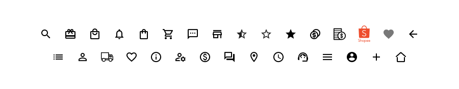 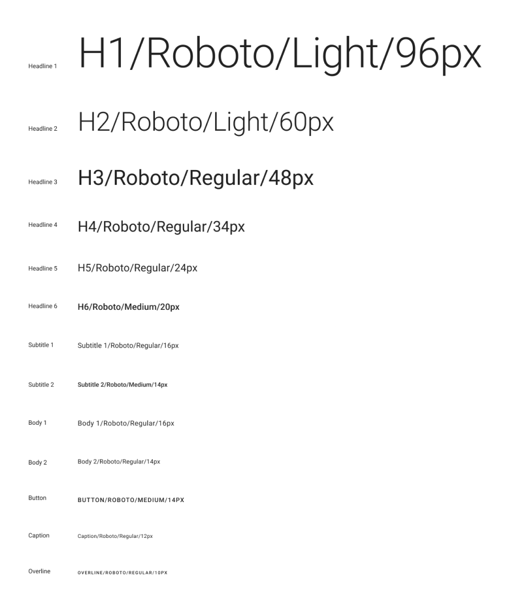Rabiscoframes
Primeiros esboços da solução.
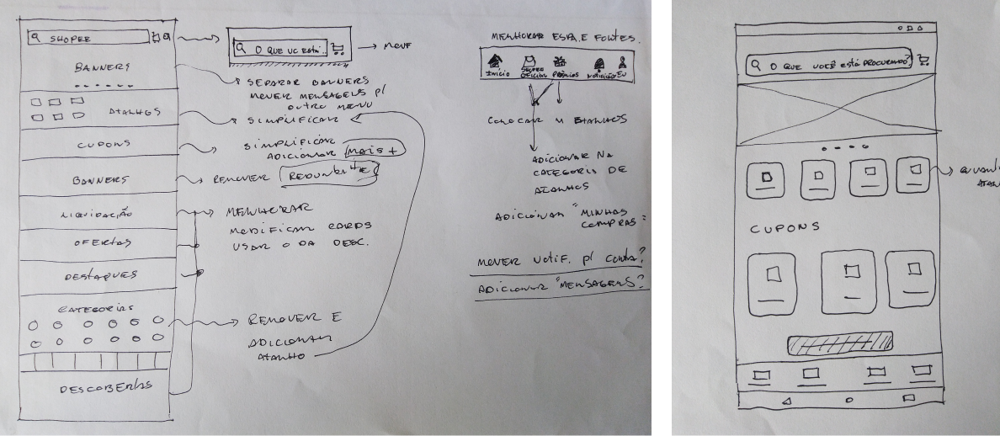Solução
Todas as telas com acesso direto pela barra de navegação inferior foram redesenhadas.
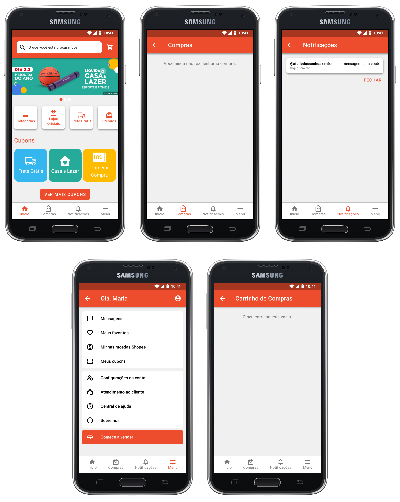Top bar
- Mensagens: Por ser uma funcionalidade com menos acessos, foi movida para o menu na bottom navigation.
- Barra de busca: Troca do texto com título da página para um texto relacionado com a função da barra de busca. Foi aumentado um pouco seu tamanho garantindo maior visibilidade e área de toque.
- Banners: A cor de fundo do banner foi separada da cor de fundo da top bar evitando assim problemas de contraste. A barra de status foi removida para fora do banner para evitar problemas com contraste e ter maior visibilidade.
Antes (tela da esquerda) e depois (tela da direita).
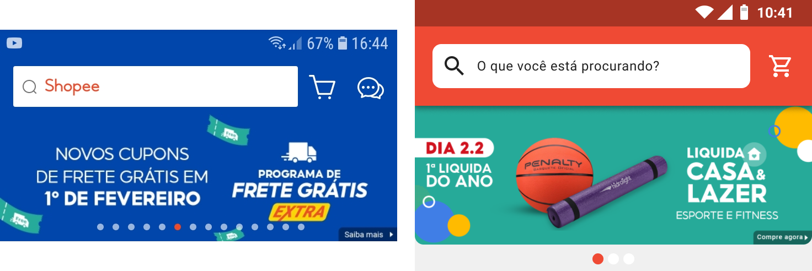Bottom navigation
- Quantidade de atalhos: Foi reduzida a quantidade de atalhos na barra, aumentando o espaço entre eles, melhorando sua legibilidade e área de toque. Shopee Oficial e Prêmios foram adicionados em uma seção na página inicial de atalhos.
- Mudança de atalho: Troca do atalho Eu pelo Menu. Quando o usuário clicava no atalho era direcionado para uma página que continha funções que não fazem parte usualmente da seção de perfil ou conta.
Antes (tela da esquerda) e depois (tela da direita).
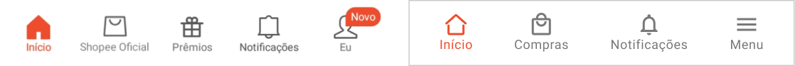Categorias
As categorias foram reformuladas com maior espaçamento e respiro visual garantindo uma melhor visualização do conteúdo sem sobrecarregar o usuário. Em categorias especiais como ofertas relâmpago e liquidação, o contador regressivo e a caixa com texto que identifica a categoria que está em liquidação, foram modificados para se adequar a identidade visual da plataforma e dar mais consistência a interface.
O botão de ver mais que ficava no canto superior direito foi colocado em baixo dos produtos, em uma posição com maior visibilidade. Além disso sua aparência foi modificada garantindo maior acessibilidade.
Antes (tela da esquerda) e depois (tela da direita).
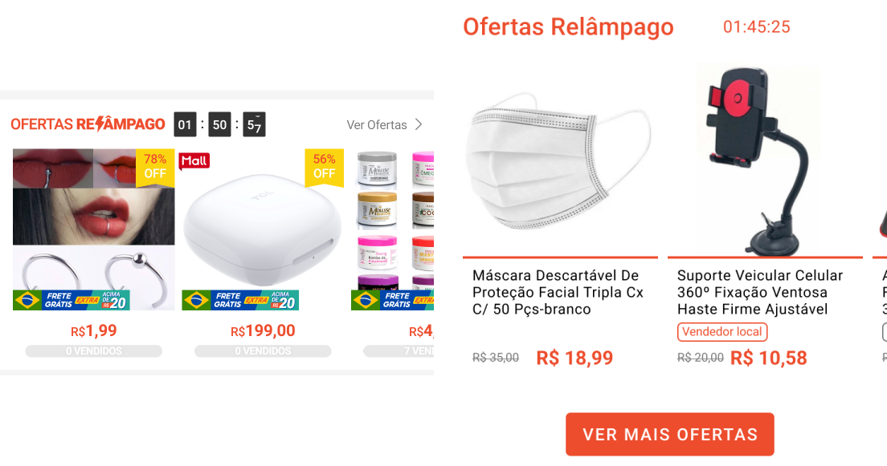Menu
A página de perfil foi simplificada, removendo opções e realocando outras que tinham maior importância e estavam escondidas dentro do menu como por exemplo Minhas compras, a solução antiga fazia com o que usuário além de descobrir sua localização precisasse de mais interações para acessá-la.
Antes (tela da esquerda) e depois (tela da direita).
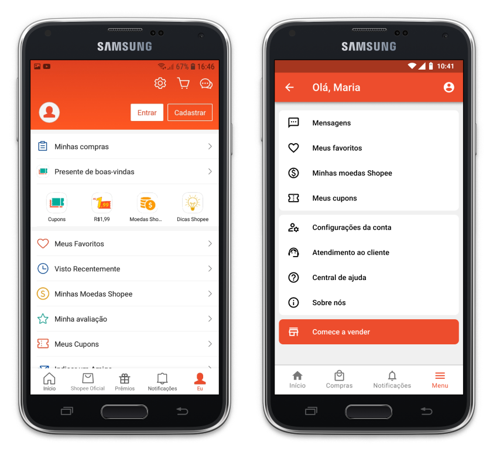Cards de promoção
Dentro da plataforma tinham vários modelos de cards, o que criava uma inconsistência. Escolhi um dos modelos que era melhor organizado e flexível. A partir dele modifiquei o tamanho da caixa de texto cabendo mais informações dos produtos e adicionei uma linha que serve para separar as imagens do produto de suas informações.
Os preços receberam maior destaque com seu texto em negrito e uma fonte um pouco maior. Outro ponto é o valor sem desconto que foi adicionado, evitando assim que o usuário fique confuso sem saber se o desconto mostrado na imagem já está incorporado no preço apresentado.
Antes (tela da esquerda) e depois (tela da direita).
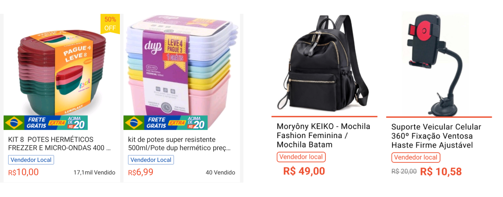Proposta Final
Abaixo o protótipo navegável, use o mouse para interagir com a interface.